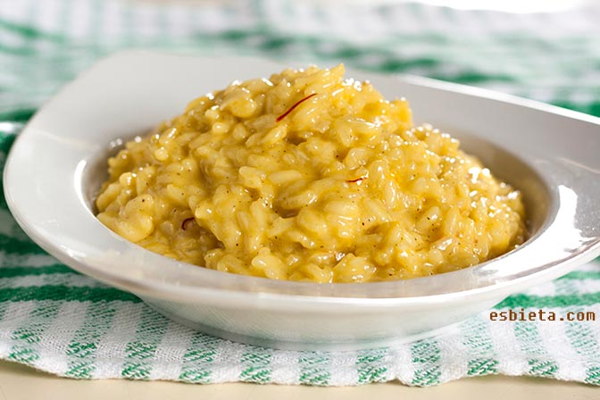

RISOTTO ALLA MILANESE

Otra delicia italiana para pasarle el pancito al plato, un clasicazo que no falla!
De la familia de los arroces, el Risotto alla milanese es un plato sabroso de estupenda textura, capaz de deleitar a los paladares más finos y sorprender a los más conservadores. Anotate esta receta para cuando quieras lujo y simpleza.
Créditos nuevamente para Esbieta.
INGREDIENTES
- 300 g de arroz Arborio
- 900 ml de caldo de pollo
- 110 g de mantequilla
- 1 cebolla mediana
- 100 ml de vino blanco
- 2 pizcas de azafrán puse 2 sobres de los 4 que vienen en la típica caja
- 70 g de parmesano rallado
- pimienta negra
PASOS
- En un recipiente ponemos el azafrán y añadimos 2 cucharadas de vino. Removemos y reservamos.
- Cortamos en cuadraditos 50 g de mantequilla y la guardamos en el congelador.
- Ponemos a calentar el caldo y, a fuego muy bajito, lo mantendremos caliente durante todo el proceso de preparación del risotto.
- Picamos finamente la cebolla (en cuadraditos de tamaño de un grano de arroz).
- A fuego medio-bajo derretimos la mantequilla restante y añadimos la cebolla. La pochamos hasta que se vuelva transparente y blandita (unos 10 minutos). En ningún momento puede cambiar de color ni dorarse.
- Añadimos el arroz y lo rehogamos unos 30 segundos.
- Añadimos el vino y cocinamos, removiendo, hasta que desaparezca el olor a alcohol.
- Añadimos un cazo de caldo y hacemos el fuego medio-alto.
- Cocinamos removiendo con movimientos circulares hasta que el arroz absorbe todo el caldo.
- Y volvemos a añadir 1 cazo de caldo. Vamos a repetir esta acción hasta que el arroz esté blandito por fuera y durito por dentro.
- Pasados unos 8 minutos de cocción, junto con el cazo de caldo siguiente añadimos azafrán. Recuerda que el caldo siempre ha de estar caliente.
- Una vez que el risotto esté hecho, lo apartamos del fuego y lo dejamos en reposo 1 minuto.
- Añadimos parmesano, mantequilla y pimienta negra molida.
- Removemos y servimos enseguida.